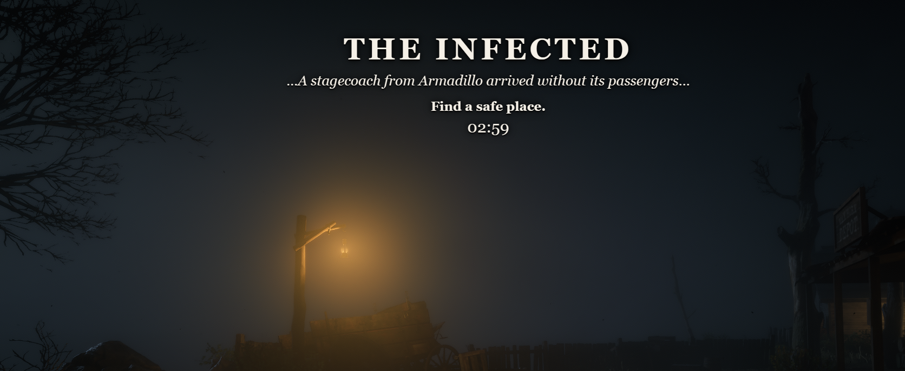
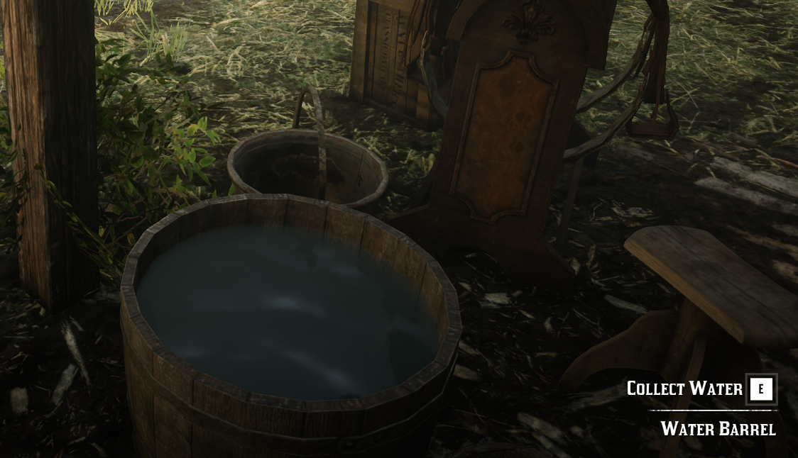

RDR2PF: Western Dead
A living frontier encyclopedia for survival, progression, professions, wildlife, the infected, recipes, and every known item in RDR2PF.
World and Gameplay
Getting Started
Character creation, controls, survival basics, and your first steps.
Character
Progression, mastery, statistics, titles, achievements, and reputation.
Professions
Cooking, crafting, hunting, fishing, farming, mining, trading, and more.
The Frontier
Territories, towns, merchants, travel, camps, factions, and encounters.
Western Dead
Infected types, horde events, infection mechanics, and survival strategies.
Economy
Currency, trading, stores, banking, values, and frontier commerce.
Game Database
Every Item A–Z
Searchable item icons, names, internal IDs, categories, descriptions, and relationships.
Recipes
Finished products, ingredients, stations, requirements, and reverse recipe links.
Herbs & Seeds
Growth, harvest, uses, recipes, and related plants.
Animals & Fish
Habitat, drops, pelts, meat, values, and crafting uses.
Weapons & Ammo
Compatibility, statistics, variants, crafting, and special ammunition.
Consumables
Food, drinks, medicine, moonshine, effects, and ingredients.
New Frontier Systems

Western DeadInfected Outbreaks
Rotating town events, warning reports, local outbreak audio, corpse searching and participation rewards.
 Prospecting
ProspectingGold Rush & Assay
Seven river reaches, Gold Rush rumors and a working assay office that turns Gold Dust into Gold Bars.

SurvivalWater Sources
The first replenishable water interaction is live, with more believable water sources planned.
Wayfarer's Posts
Ten destinations unlocked by owning a horse and wagon and earning the Valentine permit.
Pack Dogs
Persistent four-dog packs with follow, stay, defense and injury behavior.
Hired Companions
Tiered hired help, mounted hunters and premium armed protectors.
Physical Stables
Persistent stable locations, stall horses, boarding and lead-out/return interactions.
Auction House
Player listings, NPC bidders, rotating lots, rare firearms and persistent market history.